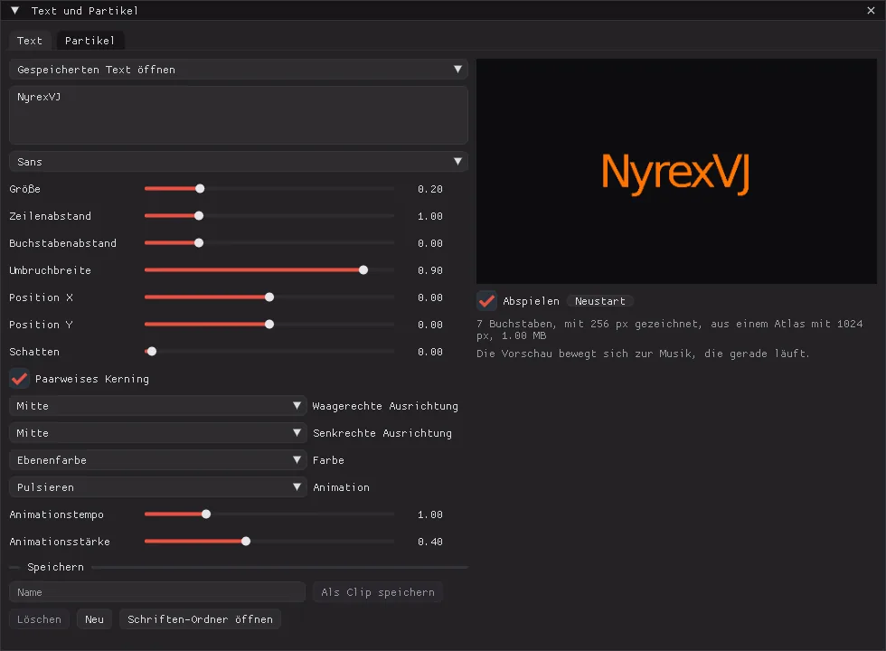
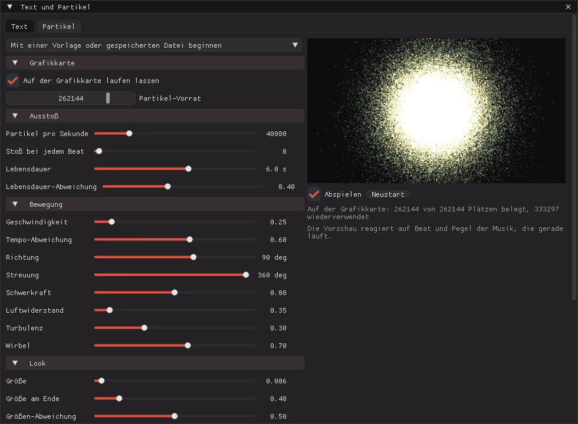

Inhalt
Erste Schritte
- Willkommen bei NyrexVJ
- Installation und erster Start
- Das Fenster im Überblick
- Deine erste Show in fünf Minuten
Visuals spielen
- Das Clip-Raster
- Decks und Übergänge
- Layer und Mischmodi
- Das Clip-Fenster
- Effekte
- Die Bibliothek
- Presets und Sitzungen
- Das Master-Fenster
Musik und Bewegung
Eigene Inhalte
- Video- und Bild-Clips
- Deine eigenen Shader
- 3D-Modelle
- Der Clip Creator
- Text, Partikel und Effektketten
- Der Node-Effekt-Editor
- Live-Quellen: Spout, NDI und Kameras
Ausgabe und Aufnahme
Live-Steuerung und Shows
- Steuerung: MIDI, OSC und die Webseite
- Show-Sync und Timecode
- Die Show-Zeitleiste
- Bühne: DMX, VRSL und VRChat
- Plugins
Nachschlagen und Hilfe
Handbuch / Eigene Inhalte
Text, Partikel und Effektketten
Drei Werkzeuge, mit denen du eigene Inhalte ohne Shader machst: Text-Clips für Namen und Botschaften, Partikel-Clips für Funkeln, Schnee und Konfetti und Effektketten, die die Effekte einer Ebene speichern, damit du sie wieder verwenden kannst. Text und Partikel sind ganz normale Clips. Du legst sie in eine Zelle, spielst sie auf jeder Ebene, fügst Effekte hinzu, mischst sie über andere Ebenen und schickst sie wie jeden anderen Clip an alle Ausgänge.
#Das Fenster
Creator, Text und Partikel... öffnet ein Fenster mit zwei Tabs, Text und Partikel. Creator, Effektketten... öffnet das Fenster für Ketten, und dasselbe Fenster öffnet sich über die Schaltfläche Effektketten... unter den Effekt-Slots einer Ebene oder des Masters.
- Oben im Tab Text öffnest du einen gespeicherten Text oder beginnst einen neuen, und oben im Tab Partikel beginnst du mit einem der eingebauten Clips oder einer Datei, die du gespeichert hast. Darunter sind die Einstellungen, daneben eine Live-Vorschau, die auf die laufende Musik reagiert.
- Als Clip speichern schreibt die Datei und legt den Clip kurz darauf in der Bibliothek unter dem Filter Generatoren ab. Läuft der Clip schon auf einer Ebene, wechselt er beim Spielen zur gespeicherten Fassung.
- Löschen entfernt eine Datei nach einer Rückfrage, und Ordner öffnen zeigt den Ordner mit deinen Dateien.


#Text-Clips
Ein Text-Clip zeigt einen Text mit durchsichtigem Hintergrund, die Ebene darunter bleibt also um die Buchstaben herum sichtbar. Er wird als kleine Datei im Ordner texts gespeichert und erscheint in der Bibliothek als Text: Name.
| Einstellung | Was sie tut |
|---|---|
| Das Textfeld | Bis zu 1000 Zeichen und 40 Zeilen. Zeilenumbrüche bleiben, wo du sie setzt |
| Schrift | Die Schriften, die NyrexVJ gefunden hat, und deine eigenen Schriften aus dem Schriften-Ordner |
| Größe | Wie hoch der Text ist, als Anteil der Bildhöhe |
| Waagerechte und senkrechte Ausrichtung | Links, Mitte, Rechts und Oben, Mitte, Unten |
| Zeilenabstand, Buchstabenabstand, Paarweises Kerning | Abstand zwischen Zeilen, zwischen Buchstaben und das feine Einpassen von Buchstabenpaaren |
| Umbruchbreite | Zeilen brechen bei dieser Breite um. Bei 0 wird der Text nicht umbrochen |
| Position X und Y, Schatten | Wo der Text sitzt und wie stark der Schatten ist |
| Farbe | Die Farben der Ebene, Weiß oder Regenbogen |
| Animation, Animationstempo, Animationsstärke | Keine Animation, Schreibmaschine, Einblenden, Nach oben gleiten, Welle, Pulsieren, Dem Audiopegel folgen oder Hüpfen, und wie schnell und wie stark |
Die Animationen laufen nach der Uhr von NyrexVJ, bleiben also im Takt des Beats. Dem Audiopegel folgen lässt den Text mit der Musik wachsen.
#Schriften und Zeichen
Leg deine eigenen .ttf-, .otf- oder .ttc-Dateien in den Ordner fonts (die Schaltfläche Schriften-Ordner öffnen zeigt ihn). NyrexVJ nutzt außerdem die Schriften deines Systems. Text wird als Unicode gelesen, Umlaute, Akzente, Symbole wie eine Musiknote, Griechisch, Kyrillisch und japanische oder chinesische Zeichen sind also möglich, solange die gewählte Schrift sie enthält.
#Partikel-Clips
Ein Partikel-Clip zeigt viele kleine weiche Punkte, die an einem Ort entstehen, sich bewegen und verblassen. Sechs Clips kommen mit dem Programm (Sparks, Snow, Embers, Fountain, Confetti und Bubbles). Deine eigenen werden im Ordner particles gespeichert und erscheinen in der Bibliothek als Particles: Name.
| Gruppe | Einstellungen |
|---|---|
| Ausstoß | Partikel pro Sekunde, Stoß bei jedem Beat, Lebensdauer und ihre Abweichung |
| Bewegung | Geschwindigkeit und ihre Abweichung, Richtung, Streuung, Schwerkraft, Luftwiderstand, Turbulenz, Wirbel |
| Look | Größe, Größe am Ende, Größen-Abweichung, Einblenden, Weichheit, Farbe, Licht addieren (Leuchten) |
| Quelle | Form (Punkt, Reihe, Ring, Rechteck), Ursprung X und Y, Ausdehnung |
| Musik | Pegel fügt Partikel hinzu, Pegel vergrößert Partikel, Pegel beschleunigt Partikel |
| Weiteres | Zufallswert, Neustart, Abspielen |
Der Beat löst den Stoß aus, auch wenn Partikel pro Sekunde auf 0 steht, und die Lautstärke der Musik steuert die drei Pegel-Regler. Mit derselben Datei und demselben Zufallswert bekommst du jedes Mal dieselbe Bewegung, praktisch, wenn ein Look sich wiederholen soll.
#GPU-Partikel
Manche Partikel-Clips können auf der Grafikkarte statt auf dem Prozessor laufen. Die Karte hält dann jedes Partikel selbst und bewegt alle in einem Schritt pro Bild, deshalb passen weit mehr hinein als die 16.384 eines normalen Partikel-Clips: von 1.024 bis 1.048.576. Drei eingebaute Clips nutzen das, GPU Nebula, GPU Beat Burst und GPU Rain. Es ist experimentell und aus, bis du unter Einstellungen, Leistung, Text und Partikel die Option Experimentelle GPU-Partikel einschaltest, weil es noch niemand auf einer echten Grafikkarte ausprobiert hat.
| Einstellung | Was sie macht |
|---|---|
| Auf der Grafikkarte laufen lassen | Im Reiter Partikel unter Grafikkarte. Macht aus einem Partikel-Clip einen GPU-Clip, und die Datei merkt es sich |
| Partikel-Vorrat | Wie viele Partikel die Karte hält, 1.024 bis 1.048.576. Ist der Vorrat voll, werden die ältesten Partikel für neue wiederverwendet |
| Wirbel | Schiebt die Partikel um die Quelle herum. Das geht auch auf dem Prozessor |
| Partikel pro Sekunde, Stoß bei jedem Beat | Bei einem GPU-Clip bis zu 200.000 pro Sekunde und 100.000 bei jedem Beat |
| Grafikspeicher für GPU-Partikel | In Einstellungen, Leistung. Alle GPU-Clips zusammen bleiben in diesem Budget, 8 bis 512 MB, am Anfang 64 MB |
Jedes Partikel kostet 64 Byte Grafikspeicher, also fassen 64 MB rund eine Million Partikel. Ein Clip, der nicht ins Budget passt, bekommt einen kleineren Vorrat, und passt nicht einmal der kleinste, läuft er auf dem Prozessor.


#Grenzen, die die Show schützen
Text und Partikel können den Rechner nie übernehmen. Eine Datei kann keine dieser Grenzen anheben, und ein Clip, der auf keiner Ebene liegt, kostet nichts.
| Was | Grenze |
|---|---|
| Gleichzeitig lebende Partikel | Einstellungen, Leistung, Text und Partikel, Partikel-Obergrenze pro Ebene: 64 bis 16.384, Voreinstellung 2048. Bei je 24 Byte sind 16.384 Partikel 384 KiB Grafikspeicher |
| Neuere Partikel, wenn die Grenze erreicht ist | Werden verworfen, und das Fenster zeigt, wie viele, damit das Bild flüssig bleibt |
| Ein Text | Bis zu 1000 Zeichen, 40 Zeilen und ein Bild der Buchstaben von höchstens 4 MiB, im Hintergrund gemacht, damit ein langer Text die Show nie anhält |
| GPU-Partikel | Einstellungen, Leistung, Text und Partikel, Grafikspeicher für GPU-Partikel: 8 bis 512 MB, 64 Byte je Partikel, bis zu 1.048.576 je Clip und 200.000 neue Partikel pro Sekunde |
| Dateien | je 32 KiB, 64 je Art, Namen bis 64 Byte |
#Effektketten
Eine Kette sind die vier Effekte einer Ebene oder des Masters, gespeichert mit ihren Einstellungen und ihrer Reaktion auf die Musik. Sie ist ein Rezept für die vier Effekt-Slots, die es schon gibt, keine neue Art von Effekt.
- Stell die Effekte einer Ebene ein und drück dann Effektketten... unter den Effekt-Slots.
- Gib unter Aktuelle Effekte als Kette speichern einen Namen und eine Kurzbeschreibung ein und drück Kette speichern.
- Um eine Kette später zu nutzen, wähl unter Gilt für die Ebene oder den Master, wähl die Kette aus und drück Anwenden. Sie ersetzt die vier Slots dieser Ebene, und Strg+Z macht es rückgängig.
- Nach Name, Beschreibung oder Effekt suchen findet Ketten, und die Vorschau zeigt die gewählte Kette auf einem Testbild, bevor du sie anwendest. Löschen fragt vorher nach.
Exportieren kopiert eine Kette an einen Pfad, den du eintippst, und Importieren liest eine .nyxchain-Datei von einem Pfad. Benutzt eine Kette einen Effekt, den es auf deinem Rechner nicht gibt, zum Beispiel einen Node-Effekt von jemand anderem, nennt das Fenster ihn, behält die anderen Effekte und lässt den Slot leer. Eine Kettendatei sind Daten: Sie wird beim Lesen geprüft, und nichts darin wird je ausgeführt.

#Dateien und Weitergeben
Alles in diesem Kapitel ist eine kleine Textdatei im Datenordner. Du kannst sie auf einen anderen Rechner kopieren oder einem Freund schicken.
| Datei | Ordner | Was sie enthält |
|---|---|---|
.nyxtext | texts | Einen Text-Clip |
.nyxpart | particles | Einen Partikel-Clip |
.nyxchain | chains | Eine Kette aus vier Effekten |
.ttf, .otf, .ttc | fonts | Deine eigenen Schriften |
Show-Pakete packen diese Dateien noch nicht ein. Der Plan eines Exports nennt Text- und Partikel-Clips als Clips, die der andere Rechner haben muss, kopiere die Dateien also von Hand.
Fehler gefunden oder etwas vergessen? Sag es uns auf GitHub. Dasselbe Handbuch steckt im Programm, du hast es also auch ohne Internet. Öffne es mit F1 oder über das Menü Hilfe, Handbuch.